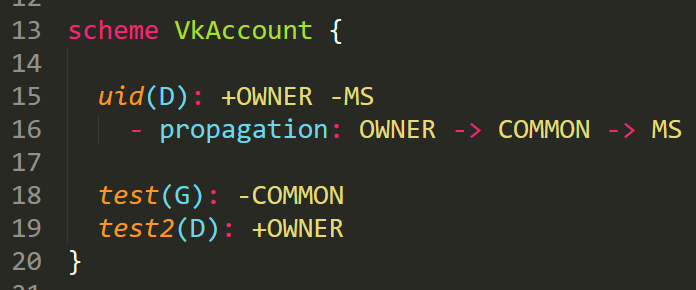

KSDL¶
Kero-Security Declarative Language - небольшой декларативный язык, используемый для описания схем доступа Kero-Security.
Соглашение по стилю кода¶
Отступ вложенности - 2 пробела или 1 таб.
Скобка открытия блока не переносится на новую строку.
После открытия блока делается отступ в 1 строку.
После закрытия блока делается отступ в 1 строку.
После последнего металайна делается отступ в 1 строку (если далее идет следующее свойство).